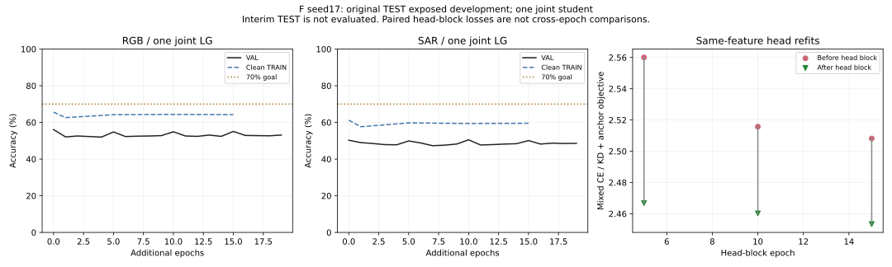

ORIGINAL_TEST_EXPOSED_DEVELOPMENT。原TEST已用于教师及LG软目标训练，不是独立测试或等训练预算结构优势。seed17，无多种子标准差。LG两个域必须使用同一份权重；D2NN四格已定稿。
联合双教师候选已完成并核验；较新的训练梯度候选须完整归档核验后才替换。整行来自同一联合PT。
| 模型 | 训练域 | 原TRAIN | VAL | 开发RGB | 开发SAR |
|---|---|---|---|---|---|
| LG | RGB+SAR联合 | 61.80% | 53.65% | 63.20% | 48.30% |
| D2NN | RGB | 51.37% | 45.20% | 50.90% | 9.70% |
| D2NN | SAR | 50.53% | 44.20% | 17.30% | 41.60% |
各run内部按较弱域VAL、再联合宏召回/CE选权重。跨已完整核验候选按人工已授权的原TEST开发选择：较低域开发准确率优先、再两域均值，并要求较低域VAL不低于最早联合父。必须整行采用同一PT，不能逐域拼权重；这不是纯VAL选模或独立测试。
| 分支 | TRAIN | VAL | 开发 |
|---|---|---|---|
| Original joint parent | 65.60% / 61.23% | 56.10% / 50.30% | 60.50% / 47.00% |
| Dual teacher | 63.47% / 58.90% | 55.20% / 50.70% | 63.40% / 46.70% |
| Surrogate backward | 64.57% / 59.03% | 56.20% / 51.10% | 63.20% / 48.30% |
| Router projection | 64.60% / 59.17% | 56.40% / 51.20% | 63.10% / 47.90% |
新候选状态：training / 1轮；RGB/SAR两域均≥70%目标：未达。联合模型路径：runs\simulation\f_joint_route_STE_s17_20261101\joint。
原RGB/SAR混合6000 TRAIN，2000 VAL；同一学生保留四专家/Top2/两层E-G/相同OEO/单Linear784→10，无CNN前端。两个已冻结教师仅提供训练目标，不作为学生推理模块，也不将域标签交给学生或固定分配专家。
原TRAIN用真实类别CE和教师KD；两域原TEST2000仅用匹配D4软目标，不进入硬标签CE。每轮6000硬TRAIN图与2000软TEST图；每5轮原单头64000视图（48000硬TRAIN增强＋16000软TEST增强）最多40内步，所有预算与历史父均保留。
选模优先RGB/SAR中较低的VAL准确率，再联合宏召回、再CE；原父E0参与。最多60/min25/pat15轮，不保证达到目标。跨域单域LG的八格实验另存，不能充当联合LG主图结果。
两域分别显示同一学生的TRAIN/VAL；仅完整锁权重后才画本run开发TEST星号。每个头block的目标前后使用相同特征/软目标，跨轮目标不能当严格配对。

新候选f_joint_route_STE_s17_20261101：complete, epoch 25。176项CPU及精确父真实GPU准入通过，现已25轮早停并完整SHA/strict/逐样本核验和canonical TEST重放。主干、参数和forward仍是原硬Top2，训练时只用dense振幅代理反向梯度，eval禁用代理。真实GPU检查原forward逐位相同，未选端口获得非零梯度；这不等于分类准确率已改善。父为上述完整双教师f8c149权重，最多40/min20/pat15轮，其他监督与选模不变。旧父和所有失败保留。
当前同一LG权重：开发RGB63.20/SAR48.30%，TRAIN64.57/59.03%，VAL56.20/51.10%。仍未两域70%。两个原训练PID已退出，原两条训练均已结束，新投影候选状态见下节。只读完整原TRAIN6000/code0测得新父RGB/SAR物理router梯度余弦约-0.979；surrogate与canonical联合router方向余弦约0.9997。仅原TRAIN原方向，不外推全8视图或容量上限。
有界训练方法：按训练域对router梯度做物理坐标冲突投影，E/G/head仍原混合损失，forward不变、无新参数。已通过默认兼容/GT隔离/数值检查及真实GPU准入后发布并启动，详见下节；不保证目标，所有原权重与失败保留。
f_joint_router_projection_s17_20261101：complete, epoch 20。已完整20轮早停选E10，并全量SHA/strict/原ID标签与canonical TEST重放核验。开发RGB63.10/SAR47.90%，两域均低于父63.20/48.30，保留父整行。旧训练均已结束，新的角度SGD候选状态见下节。仅对router的两域物理相位梯度作同时负内积投影，按实际样本数加权；E/G/head仍原混合损失梯度，学生forward完全不变。域标签只用于训练损失分组，TEST软目标分支拒绝硬标签输入。额外router任务梯度评估次数单独记账，投影不保证Adam步后两域下降或70%。完整失败候选保留，主表仍用父63.20/48.30。
另做了固定父权重、固定head与相同完整TRAIN/code0的三次非持久router单步数值检查，原参数全部恢复；只有训练目标，没有VAL/TEST或新准确率。检查说明物理梯度投影的几何性质不自动延续到Adam实际步。运行中的配置未据此热改，详见配对数值记录；任何后续优化仍须有限预算、测试和准入。
f_joint_router_sgd_s17_20261101：training, epoch 1。194项CPU回归、精确124父真实TRAIN/TEST软输入GPU准入通过并启动。全phase仍先统一物理梯度clip5，E/G走原Adam；router沿投影方向作最大请求角度.0003的归一SGD，无router Adam动量，再导回同一canonical raw。真实GPU角度步方向余弦约0.99999987、max约.00029999；推理、GT隔离及头block冻结通过。最多30/min15/pat10，原父参选，不保证实际两域准确率改善；未完整核验前不替换主表。